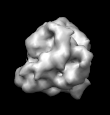
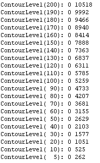
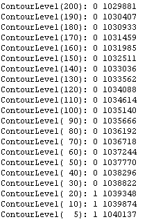

mrcImageVolumeCalc
オプション一覧
| オプション |
必須項目/選択項目 |
説明 |
デフォルト |
| -i |
必須 |
入力ファイル設定 |
NULL |
| -o |
選択 |
出力ファイル設定 |
stdout |
| -n |
選択 |
分子の数 |
1.0 |
| -M |
選択 |
分子量 |
1.0 |
| -d |
選択 |
密度 |
1.35 |
| -D |
選択 |
ピクセル幅を設定 |
5.0 |
| -I |
選択 |
反転 |
0 |
| -h |
選択 |
ヘルプを表示 |
|
******実行例******
------入力ファイルの画像------
入力画像は３Ｄ画像でなければならない
|  |
最小
最大
平均値
標準偏差
標準誤差
|
0
2
0.00148981
0.043511
4.26578e-05
|
------出力結果------
今回の入力ファイルのH-rasの分子量などを設定する
n=1,M=21000,d=1.35,D=1.700となる
実行すると以下のデータが得られる

------オプション -I------
上記と同じ条件でオプション-Iを使用すると以下のようなデータが得られる
